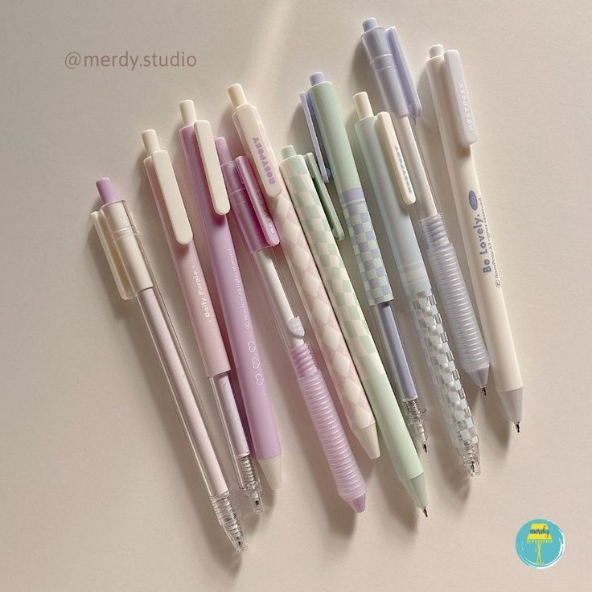

Top 10 Pens for Writing
Welcome to the ultimate guide for pen enthusiasts! Whether you're a professional writer or just a fan of fine stationery, finding the perfect pen can elevate your writing experience. Let’s explore the top 10 pens that should be on every writer’s desk.
1. Pilot G2 Gel Pen
The Pilot G2 is a favorite for its smooth gel ink and comfortable grip. Perfect for everyday writing or long journaling sessions. Plus, it comes in a range of colors to suit any mood!
2. Uni-ball Jetstream
Known for its quick-drying ink and smooth writing experience, the Jetstream is ideal for left-handed writers who need to avoid smudging. It’s a reliable choice for professional and personal use.
3. Lamy Safari Fountain Pen
For those who enjoy the elegance of fountain pens, the Lamy Safari is a stylish and affordable option. Its ergonomic design and smooth ink flow make it a joy to write with.
4. Zebra Sarasa Clip
This gel pen offers vibrant colors and a smooth writing experience. The clip design ensures it stays securely attached to your notebook or pocket, making it a practical choice for on-the-go writing.
5. Pentel EnerGel
The EnerGel combines the smoothness of gel ink with the quick-drying properties of a ballpoint pen. Its retractable design and variety of tip sizes make it a versatile option for any writing task.
6. Parker Jotter
A classic choice with a timeless design, the Parker Jotter is known for its reliability and smooth writing performance. It’s a great pen for both formal and casual writing.
7. Muji Gel Pen
Muji’s gel pens are praised for their minimalist design and smooth ink flow. They’re affordable and come in various colors, perfect for both writing and adding a splash of color to your notes.
8. Cross Click Pen
The Cross Click combines style with practicality. Its sleek design and retractable tip make it a sophisticated choice for professionals who need a reliable pen on hand.
9. Sakura Pigma Micron
Ideal for detailed work and drawing, the Pigma Micron pens are known for their archival-quality ink and fine tips. They’re perfect for artists and note-takers alike.
10. Caran d’Ache 849
This Swiss-made pen is renowned for its precision and durability. With its hexagonal barrel and smooth writing performance, it’s a luxury choice for those who appreciate high-quality stationery.
Pro Tips for Choosing the Right Pen
- Tip #1: Test out pens before buying. A pen that feels right in your hand can make all the difference in your writing experience.
- Tip #2: Consider the type of ink you prefer. Gel, ballpoint, and fountain inks each offer different writing experiences.
- Tip #3: Invest in pens that have refillable options. It’s both economical and environmentally friendly!
- Tip #4: Match your pen to your writing needs. A fine tip is great for detailed work, while a broad tip is better for bold, expressive writing.